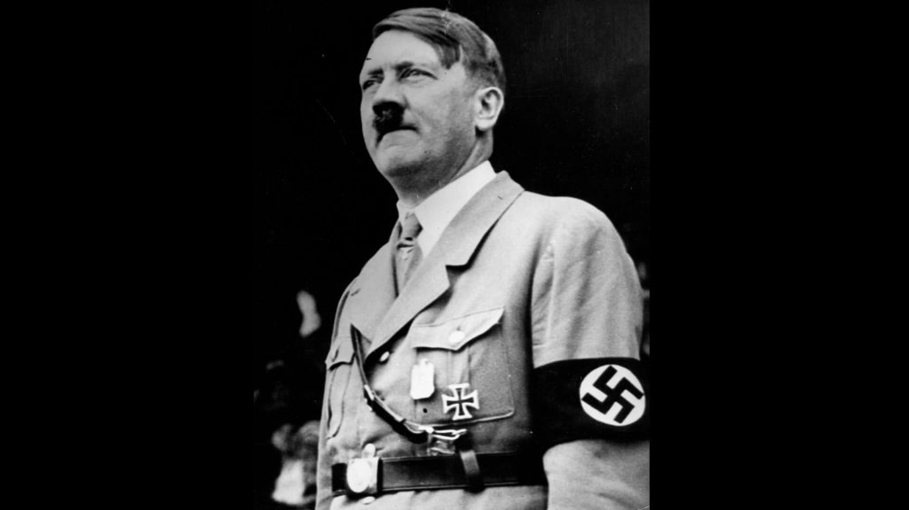
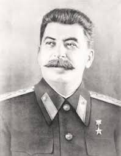

World War II[b] or the Second World War (1 September 1939 – 2 September 1945) was a global conflict between two coalitions: the Allies and the Axis powers. Nearly all the world's countries—including all the great powers—participated, with many investing all available economic, industrial, and scientific capabilities in pursuit of total war, blurring the distinction between military and civilian resources. Tanks and aircraft played major roles, with the latter enabling the strategic bombing of population centres and delivery of the only two nuclear weapons ever used in war. World War II was the deadliest conflict in history, resulting in 70 to 85 million fatalities, more than half of which were civilians. Millions died in genocides, including the Holocaust of European Jews, and by massacres, starvation, and disease. Following the Allied powers' victory, Germany, Austria, Japan, and Korea were occupied, and war crimes tribunals were conducted against German and Japanese leaders.
The causes of World War II included unresolved tensions in the aftermath of World War I and the rises of fascism in Europe and militarism in Japan, and it was preceded by events including the Japanese invasion of Manchuria, Spanish Civil War, outbreak of the Second Sino-Japanese War, and German annexations of Austria and the Sudetenland. World War II is generally considered to have begun on 1 September 1939, when Nazi Germany, under Adolf Hitler, invaded Poland. The United Kingdom and France declared war on Germany on 3 September.

Under their Molotov–Ribbentrop Pact, Germany and the Soviet Union had partitioned Poland and marked out "spheres of influence" across Eastern Europe; in 1940, the Soviets annexed the Baltic states and parts of Finland and Romania. After the fall of France in June 1940, the war continued primarily between Germany and the British Empire, with campaigns in North and East Africa and the Balkans, the aerial Battle of Britain and the Blitz of the UK, and the naval Battle of the Atlantic. By mid-1941, through a series of campaigns and treaties, Germany occupied or controlled much of continental Europe and had formed the Axis alliance with Italy, Japan, and other countries. In June 1941, Germany led the European Axis in an invasion of the Soviet Union, opening the Eastern Front.

Japan aimed to dominate East Asia and the Asia-Pacific, and by 1937 was at war with the Republic of China. In December 1941, Japan attacked American and British territories in Southeast Asia and the Central Pacific, including an attack on Pearl Harbor, which resulted in the United States and the United Kingdom declaring war against Japan. The European Axis powers declared war on the US in solidarity. Japan soon conquered much of the western Pacific, but its advances were halted in 1942 after its defeat in the naval Battle of Midway; Germany and Italy were defeated in North Africa and at Stalingrad in the Soviet Union. Key setbacks in 1943—including German defeats on the Eastern Front, the Allied invasions of Sicily and the Italian mainland, and Allied offensives in the Pacific—cost the Axis powers their initiative and forced them into strategic retreat on all fronts. In 1944, the Western Allies invaded German-occupied France at Normandy, while the Soviet Union regained its territorial losses and pushed Germany and its allies westward. In 1944 and 1945, Japan suffered reversals in mainland Asia, while the Allies crippled the Japanese Navy and captured key western Pacific islands. The war in Europe concluded with the liberation of German-occupied territories; the invasion of Germany by the Western Allies and the Soviet Union, culminating in the fall of Berlin to Soviet troops; Hitler's suicide; and the German unconditional surrender on 8 May 1945. Following the refusal of Japan to surrender on the terms of the Potsdam Declaration, the US dropped the first atomic bombs on Hiroshima on 6 August and Nagasaki on 9 August. Faced with imminent invasion of the Japanese archipelago, the possibility of more atomic bombings, and the Soviet declaration of war against Japan and its invasion of Manchuria, Japan announced its unconditional surrender on 15 August and signed a surrender document on 2 September 1945, marking the end of the conflict.